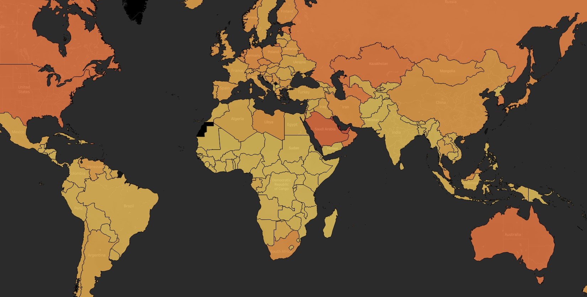
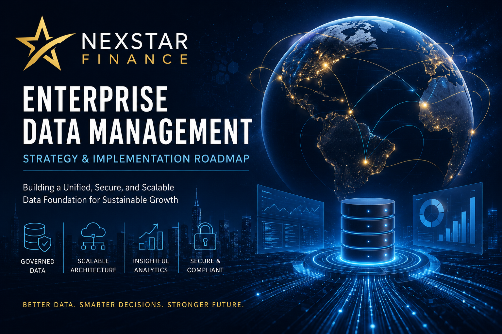
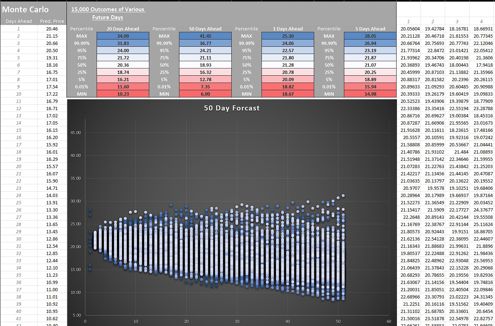
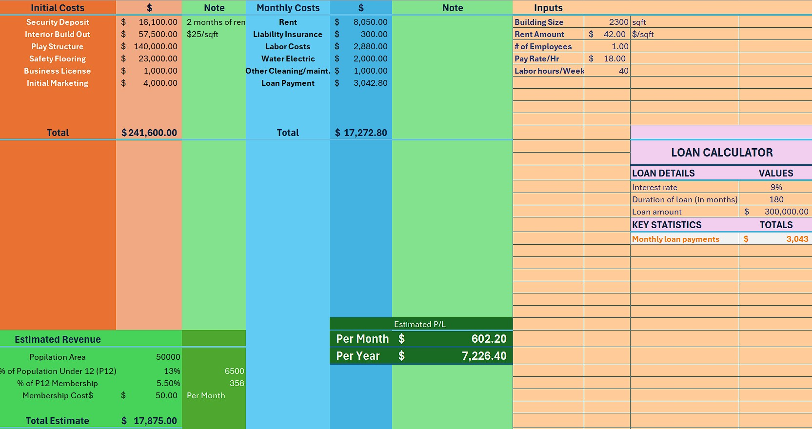

World Data Exploration
This is an analysis of a dataset of various statistics such as Net Trade, GDP, CO2 Emissions, Inflation, Minimum Wage, etc. This is an ongoing project. The dataset used can be found here.

This is an analysis of a dataset of various statistics such as Net Trade, GDP, CO2 Emissions, Inflation, Minimum Wage, etc. This is an ongoing project. The dataset used can be found here.


This project evaluates the current state of enterprise data management at NexStar Finance and identifies key challenges related to data fragmentation, system integration, and governance. Industry-standard data management principles are used to assess the organization's architecture and develop recommendations for improvement. The report provides a strategic roadmap for implementing scalable data solutions that support operational efficiency, regulatory compliance, and long-term business growth.

This ongoing project leverages Convolutional Neural Networks (CNNs) to analyze and forecast daily returns of the ProShares Ultra VIX Short-Term Futures ETF (UVXY). By employing a sequence length of 60 and advanced regularization techniques, the model aims to capture temporal dependencies and improve predictive accuracy. Early results highlight promising trends but reveal challenges such as overfitting and forecast smoothing. I am actively refining the architecture and exploring recurrent layers for enhanced performance. Check back for updates as we continue to enhance this exciting initiative! The dataset used can be found here.

Below you can find links to the SQL code snippets that I used to explore the data and create the tables used to develop the Tableau dashboard. It looks at deaths, infections, and vaccination statistics. This project is often updated and improved.

Monte Carlo Simulation developed in Excel. The primary use is to forecast the future price path of financial instruments.

This is the model I built when planning my pool maintenance company.

This Excel sheet is a financial model for a business plan, detailing initial setup costs, recurring monthly expenses, and operational metrics. It includes calculations for rent, labor, and construction, providing a structured framework for budgeting and strategic planning in a commercial project.

{kind=link}
{kind=link}